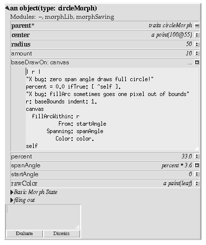

Drawing
Add a baseDrawOn: method


Making the pie wedge draw
Use `Show Morph' on the pie wedge object's middle-button menu to make it appear as a morph. We have not changed any behavior, so it draws as a circle.Use `Move to Own Window' to move the morph into a window on a new world. This makes it easier to fix errors in the draw method, since the main programming window can still be used even if the morph's drawing method is broken.
Add the following slots to the object:
baseDrawOn: canvas = (| r. | "X bug: zero span angle draws full circle!" percent = 0 ifTrue: [ ^self ]. "X bug: fillArc sometimes goes one pixel out of bounds" r: baseBounds indent: 1. canvas fillArcWithin: r From: startAngle Spanning: spanAngle Color: color. self ). spanAngle = ( 3.6 * percent ).baseDrawOn: is the primary method used to render a morph (but not its submorphs). It takes a canvas as argument (an object which serves as a proxy for an X drawable).
We need a couple of lines to work around problems with the underlying X graphics operations. First, if we try to draw a filled arc with span of zero, X interprets this as a full circle. Second, the X server we tested this code on occasionally drew slightly outside the specified bounds.
Pick up the pie wedge to make it redraw. It should show as a third of a circle.